28 Homework: Covariate Shift
Summary
$$ \newcommand{X}{} \newcommand{Y}{}
$$
In this one, we’re going to review some stuff that people mixed up on the exam and work on visualization and computation for complex summaries of data with multiple and multivalued covariates.
Review
In Figure 30.1, I’ve drawn two histograms. The first shows a population \(y_1 \ldots y_m\) with mean \(\mu = \frac1m \sum_{j=1}^m y_j\) and variance \(\sigma^2 = \frac1m \sum_{j=1}^m (y_j - \mu)^2\). The second shows a sample \(Y_1 \ldots Y_n\) drawn with replacement from this population—the sample that was used in Problem 1 of Midterm 1.
In Figure 30.2, I’ve drawn the bootstrap sampling distributions of three estimators of the population mean.
- \(\hat\mu = \bar{Y}/2\) for \(\bar{Y} = \frac1n \sum_{i=1}^n Y_i\)
- \(\hat\mu = 1 + \bar{Y}/2\).
- \(\hat\mu = Y_2\).
Solution
Locked (Week 7)
Solution
Locked (Week 7)
Solution
Locked (Week 7)
Solution
Locked (Week 7)
Complex Summaries and Covariate Shift
In this section, we’ll work with a subset of the California income data considered in lecture. We’ll look at incomes of CA residents who responded to the Current Population Survey in 2022, were in the age range 25-25, and graduated from high school. I’ve plotted this data below. As in lecture:
- \(W_i=0\) for male residents and \(W_i=1\) for female residents;
- \(X_i\) is years of schooling.
- \(Y_i\) is income in dollars.
education vs income colored by sex with histograms of education overlaid. Note that, because incomes are on a very different scale than the proportions we’re displaying in the histogram, two different scales for the y-axis are used. The scale on the left is for income. The scale on the right is for the proportions.
education colored by sex in two layouts. On the left, they’re plotted one above the other. On the right, they’re overlaid.
| W | X | mu.hat | N.wx |
|---|---|---|---|
| 0 | 12 | 35k | 353 |
| 0 | 13 | 41k | 179 |
| 0 | 14 | 50k | 110 |
| 0 | 16 | 70k | 311 |
| 0 | 18 | 100k | 107 |
| 0 | 20 | 110k | 35 |
| 1 | 12 | 21k | 252 |
| 1 | 13 | 27k | 178 |
| 1 | 14 | 30k | 110 |
| 1 | 16 | 58k | 329 |
| 1 | 18 | 77k | 140 |
| 1 | 20 | 107k | 36 |
We’ll consider the following four estimators of the difference in income between the male and female CA residents in our sample.
\[
\color{gray}
\begin{aligned}
\hat \Delta_{\text{raw}} &= \frac{1}{N_1}\sum_{i: W_i=1} Y_i - \frac{1}{N_0}\sum_{i: W_i=0} Y_i \\
\hat\Delta_0 &=\frac{1}{N_0}\sum_{i: W_i=0} \qty{\hat\mu(1,X_i) - \hat \mu(0, X_i)} \\
\hat \Delta_1 &= \frac{1}{N_1}\sum_{i: W_i=1} \qty{\hat\mu(1,X_i) - \hat \mu(0, X_i)} \\
\hat \Delta_{\text{all}} &= \frac{1}{n} \sum_{i=1}^n \qty{\hat\mu(1,X_i) - \hat \mu(0, X_i)}
\end{aligned}
\]
Solution
Locked (Week 7)
In Lecture 9, we decomposed the raw difference \(\hat\Delta_{\text{raw}}\) as a sum of the adjusted difference \(\hat\Delta_1\) and a covariate shift term. And we talked about how to use plots like the ones above to understand what the covariate shift term would look like. In this next exercise, we’ll get in some practice interpreting plots like these. We’ll work with three samples. Each sample is shown in a tab below.
- \(W_i\) is an indicator for county.
- 0 for residents of Los Angeles County
- 1 for residents of San Francisco and Alameda Counties
- \(X_i\) is education in years of schooling
- \(Y_i\) is income in dollars.
- \(W_i\) is an indicator for county.
- 0 for residents of San Diego
- 1 for residents of Orange County
- \(X_i\) is education in years of schooling
- \(Y_i\) is unemployment status: 0 for employed and 1 for unemployed.

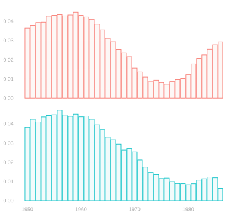
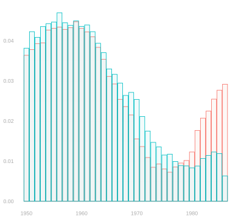
- \(W_i\) is an indicator for voting in the 2004 primary.
- 1 if they voted in the last primary,
- 0 if they didn’t.
- \(X_i\) is birth-year.
- \(Y_i\) is an indicator for voting in the 2006 primary.
- 1 if they voted
- 0 if they didn’t
Solution. Income in LA vs SFBay
Locked (Week 7)
Solution.Unemployment in SD vs OC
Locked (Week 7)
Solution. Primary Turnout in MI
Locked (Week 7)
We can derive similar decompositions for our other adjusted differences \(\hat\Delta_0\) and \(\hat\Delta_{\text{all}}\). That is, we can decompose \(\hat\Delta_{\text{raw}}\) as the sum of \(\hat\Delta_0\) or \(\hat\Delta_{\text{all}}\) and a different, but conceptually similar covariate shift term.
Solution
Locked (Week 7)
Now that we have these new decompositions, let’s use them.
Solution
Locked (Week 7)
Covariate shift isn’t just the phenomenon behind the difference between raw and adjusted differences. It shows up wherever we’re comparing averages over different groups. One example is comparing different adjusted differences, e.g. \(\hat \Delta_1\) and \(\hat \Delta_0\). The following exercises will explore that. These are extra credit exercises, but I encourage you to look them over and think about them at least for a minute or two. There’s a good chance that, having made it this far, you’ll find them pretty easy.
Solution
Locked (Week 7)
Solution
Locked (Week 7)
Solution
Locked (Week 7)
A simpler explanation of which is bigger.
Locked (Week 7)